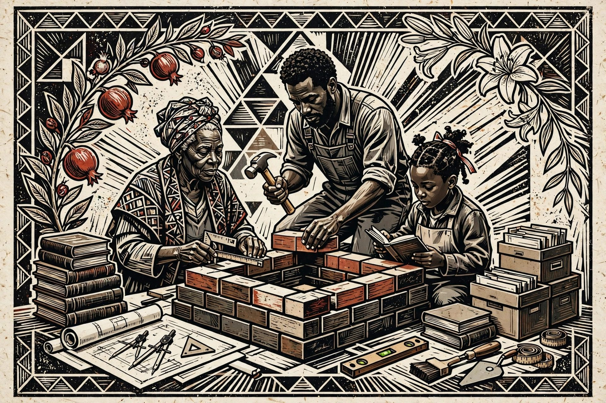

Israelism
The ideological foundation. The philosophy the entire enterprise stands on.
Freedom Arkives · Civilizational doctrine 01
The strong Israelite is the regenerated builder: covenant-rooted, literate, disciplined, technically capable, institution-minded, and responsible for leaving the next generation more than he received.
Galut is more than geography. It is dependency wherever memory, education, production, technology, and coordination remain outside the people’s control.

The ecosystem
Pomegranate × Lily is an independent intellectual, publishing, research, software, and educational enterprise founded by Christopher Turner (Nachamasha Yahsharala). Each system below has a defined function — philosophy, research, institution, communication, construction, operation, application. Nothing here is decorative.
The ideological foundation. The philosophy the entire enterprise stands on.
The scholarly discipline. An interdisciplinary research method for studying covenant peoples on their own terms.
The institutional platform. Preserves the records, publishes the work, and houses the enterprise.
The publishing system. Structures how the work reaches the public — deliberately, not decoratively.
The research system. Governs how investigations are built, sourced, and verified before they ship.
The operational methodology. Evidence-control discipline — goal, context, audience, format, limits, quality check — on everything produced.
Technology applications. Python Atelier, Core37, and future applications put the methodology in people’s hands.
His ideological work supplies the philosophical foundation. Covenant Anthropology provides an interdisciplinary research method. Freedom Arkives institutionalizes and publishes that work. WORKAVISM structures its public communication. NURAH Protocols govern its research and construction. G-CAFL-QC provides operational discipline. Pomegranate × Lily organizes the enterprise.
The chain runs: Israelism → Covenant Anthropology → Freedom Arkives → WORKAVISM / NURAH → G-CAFL-QC → software and commercial applications.
Who this work is for
Not everyone needs the same intervention. The work begins by naming who is carrying knowledge without structure, identity without continuity, or pain without a recovery apparatus.
Identity is a starting point. The next question is whether your household, work, records, skills, and institutions can survive disruption and pass forward.
Changing names is not enough. Covenant restoration requires literacy, commandment, sacred time, household instruction, disciplined practice, and accountable communal life.
Participation, recognition, and consumption are not power. Convert attention and earnings into skill, tools, records, productive assets, apprenticeships, and durable organizations.
Black women’s safety, health, ownership, rest, leadership, and authority are part of the program. Men are held to responsibility in fatherhood, work, care, nonviolence, and household life.
The correction
Exile conditions teach short horizons, dependency, fragmentation, and symbolic substitutes for power. The correction is not contempt for survival. It is the refusal to let survival habits govern the future forever.
Visibility can rise while ownership, authority, safety, and succession remain unchanged.
Build the archive, company, training pipeline, legal structure, reserve, and record that remain when the audience moves on.
Charisma concentrates knowledge and makes the people dependent on one personality.
Write the charter, publish the procedure, train successors, keep records, and build review into leadership.
Money can pass through a household without becoming security, ownership, production, or inheritance.
Turn earnings into reserves, tools, property, lawful enterprise, wills, insurance, education, and productive assets.
Memory scattered across platforms and personalities can disappear, distort, or become unusable.
Collect records with consent, organize metadata, preserve multiple copies, migrate formats, and define stewardship.
Emotional language without material organization can name the wound while leaving the system intact.
Let repair produce health, skill, trust, work, savings, households, records, and institutions that can protect life.
Covenant before creed
Freedom Arkives begins inside the covenantal world of Torah, prophets, Messiah, peoplehood, commandment, judgment, repentance, inheritance, and restoration—not later metaphysical systems imposed as the entrance test.
Torah orders law, time, food, family, inheritance, justice, leadership, worship, and national memory. Reducing it to private religion shrinks the structure.
Love is not reduced to feeling, belonging, or affirmation. Commandment, justice, discipline, and responsibility give covenant love a public form.
Independent reading, comparison, writing, teaching, and preservation weaken the monopoly of the approved interpreter. Instruction is not the same as interpretive authority.
A doctrine is incomplete if it cannot form capable people, stable households, governed institutions, preserved memory, and inheritable productive capacity.
The strong Israelite is not the one who can name the captivity. It is the one who can build beyond it.
The civilizational machine
A people’s doctrine becomes real only through repeatable human and institutional capacity. Open each line to see the test.
Can families sustain preventive care, movement, food access, bodily discipline, and recovery—not merely survive recurring crisis?
Are children, women, elders, and caregivers protected by reliable labor, equal legal personhood, shared responsibility, and inheritance preparation?
Are records, oral histories, texts, interpretations, family documents, and institutional decisions preserved so memory can instruct rather than drift into rumor?
Can the community consistently produce literacy, research discipline, interpretive independence, credentials where required, and the ability to teach who comes next?
Are there lawful trades, technical competencies, crafts, professional pathways, apprenticeships, and standards that convert talent into useful mastery?
Does economic activity produce equipment, client lists, contracts, savings, companies, property, jobs, supplier networks, and assets that remain?
Can organizations survive the loss of a founder through written authority, transparent finance, due process, records, succession, and protection against self-dealing?
Can the people understand, build, repair, secure, govern, and preserve the tools that organize modern life—or only consume them?
Can the people store memory, prove achievement, communicate direction, and preserve public records without relying on one commercial platform?
Are present decisions connected to five-year foundations, twenty-five-year generational systems, and a one-hundred-year continuity horizon?
Mission finder
Do not attempt the whole civilization this month. Choose the weakest transmission point you can actually strengthen in thirty days.
The objective is not to collect everything. It is to prove that your household can preserve and retrieve what matters without depending on one phone, one account, or one person’s memory.
The library
Browse the published Freedom Arkives library by title, author, or format.
Catalog details reflect available publication information; current prices and additional product details are provided by Amazon
All links — FreedomArkives →No books match this search.
Articles
Search the essay catalog, filter by subject, and open each full article at its official Medium page.
No articles match this search.
The measure is what the next generation can inherit, govern, enlarge, and pass forward.
Build people before celebrating institutions. Build institutions before depending on personalities. Preserve knowledge before memory disappears. Produce more builders than consumers in every generation.